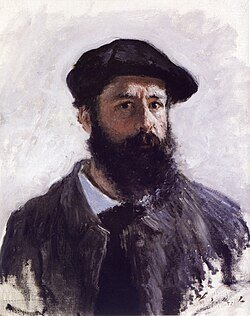

Клод Моне ✦ 1840–1926
Оскар-Клод Моне, французский художник, основатель импрессионизма. Любил писать свет, воду и погоду прямо на улице, а не в мастерской.
Кратко
| Полное имя | Оскар-Клод Моне |
|---|---|
| Родился | 14 ноября 1840, Париж |
| Умер | 5 декабря 1926, Живерни |
| Направление | Импрессионизм |
Биография
Моне родился в Париже, но в пять лет семья переехала в Гавр на побережье Нормандии. Там он рисовал карикатуры на знакомых, а художник Эжен Буден научил его писать на открытом воздухе. Этот подход стал основой всего его творчества.
В 1859 году он уехал в Париж учиться, потом служил в армии в Алжире и вернулся из-за болезни. В студии Глейра он подружился с Ренуаром, Сислеем и Базилем. Вместе они позже создали новое направление.
В 1874 году на выставке независимых художников показали его картину «Впечатление. Восходящее солнце». Критик насмешливо назвал участников «импрессионистами», а название закрепилось. В последние десятилетия Моне жил в Живерни и писал свой сад с прудом. Ближе к концу жизни у него развилась катаракта, в 1923 году ему сделали операцию.
Работы
Нажми на любую работу, чтобы перевернуть карточку
Загружаем картины из каталога…